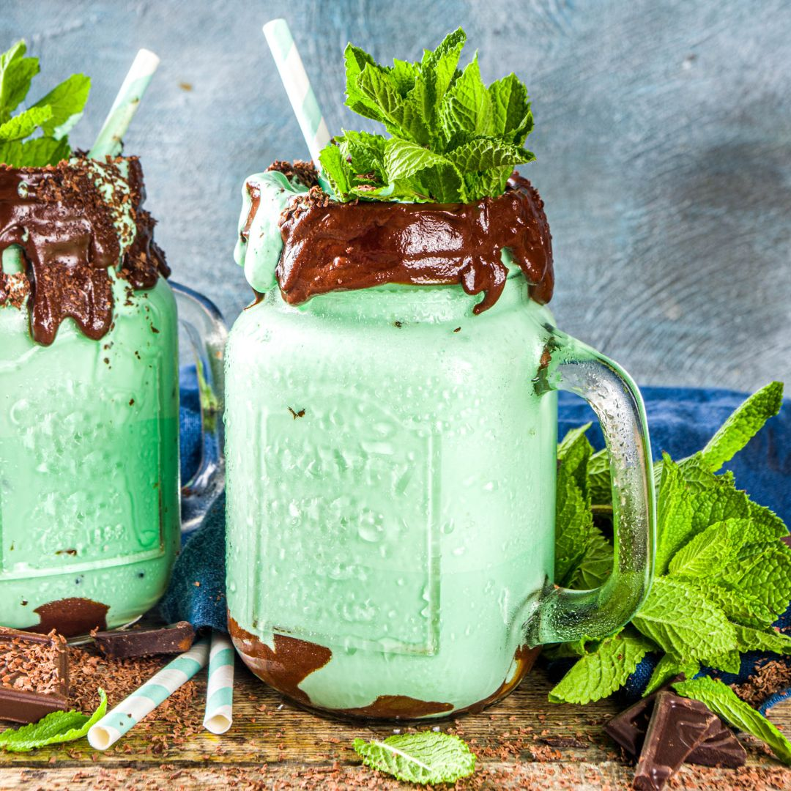

Mint Chocolate Milkshake Recipe

How To Make a Mint Chocolate Milkshake
Homemade milkshakes may take extra time to prepare but choosing to use this recipe than odering out may just prove to be one of your best ideas decisions.
The problem with most milkshakes is that most are either are not thick enough, lacking ingredients or if you find one that ticks all the boxes it normally costs the price of a house (Not literally but you know what I mean).
- 3 Large Scoops Mint Ice Cream
- 300ml Cold Milk
- 1 Dark chocolate bar
- Bunch Mint Leafs
- Whipped or spray cream to serve
Steps to Success
- Add milk and ice cream into a food processor and blend until smooth and creamy.
- Pour some melted chocolate at the bottom and around the inside of your glass. Pour milkshake into the glass and top with more melted chocolate and fresh mint leafs.